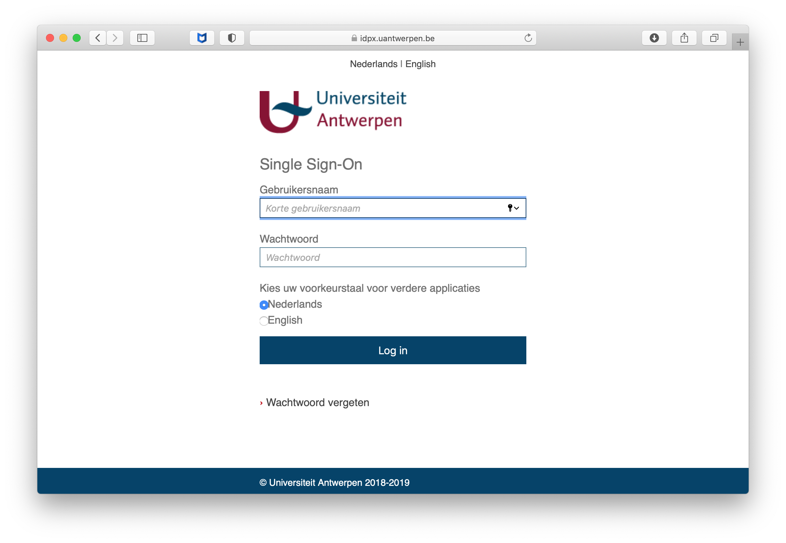

Getting an HPC Account#
Getting ready to request an account#
All users of Antwerp University Association (AUHA) can request an account on the UAntwerpen-HPC, which is part of the Flemish Supercomputing Centre (VSC).
See HPC policies for more information on who is entitled to an account.
The VSC, abbreviation of Flemish Supercomputer Centre, is a virtual supercomputer centre. It is a partnership between the five Flemish associations: the Association KU Leuven, Ghent University Association, Brussels University Association, Antwerp University Association and the University Colleges-Limburg. The VSC is funded by the Flemish Government.
The UAntwerpen-HPC clusters use public/private key pairs for user authentication (rather than passwords). Technically, the private key is stored on your local computer and always stays there; the public key is stored on the UAntwerpen-HPC. Access to the UAntwerpen-HPC is granted to anyone who can prove to have access to the corresponding private key on his local computer.
How do SSH keys work?#
-
an SSH public/private key pair can be seen as a lock and a key
-
the SSH public key is equivalent with a lock: you give it to the VSC and they put it on the door that gives access to your account.
-
the SSH private key is like a physical key: you don't hand it out to other people.
-
anyone who has the key (and the optional password) can unlock the door and log in to the account.
-
the door to your VSC account is special: it can have multiple locks (SSH public keys) attached to it, and you only need to open one lock with the corresponding key (SSH private key) to open the door (log in to the account).
Since all VSC clusters use Linux as their main operating system, you will need to get acquainted with using the command-line interface and using the terminal. Launch a terminal from your desktop's application menu and you will see the bash shell. There are other shells, but most Linux distributions use bash by default.
Test OpenSSH#
Secure Shell (ssh) is a cryptographic network protocol for secure data communication, remote command-line login, remote command execution, and other secure network services between two networked computers. In short, ssh provides a secure connection between 2 computers via insecure channels (Network, Internet, telephone lines, ...).
"Secure" means that:
-
the User is authenticated to the System; and
-
the System is authenticated to the User; and
-
all data is encrypted during transfer.
OpenSSH is a FREE implementation of the SSH connectivity protocol. Linux comes with its own implementation of OpenSSH, so you don't need to install any third-party software to use it. Just open a terminal window and jump in!
On all popular Linux distributions, the OpenSSH software is readily available, and most often installed by default. You can check whether the OpenSSH software is installed by opening a terminal and typing:
$ ssh -V
OpenSSH_7.4p1, OpenSSL 1.0.2k-fips 26 Jan 2017
To access the clusters and transfer your files, you will use the following commands:
-
ssh-keygen: to generate the ssh keysgenerate a public
-
ssh: to open a shell on a remote machine;
-
sftp: a secure equivalent of ftp;
-
scp: a secure equivalent of the remote copy command rcp.
Generate a public/private key pair with OpenSSH#
A key pair might already be present in the default location inside your home directory. Therefore, we first check if a key is available with the "list short" ("ls") command:
$ ls ~/.ssh
If a key-pair is already available, you would normally get:
authorized_keys id_rsa id_rsa.pub known_hosts
Otherwise, the command will show:
ls: .ssh: No such file or directory
You can recognise a public/private key pair when a pair of files has the same name except for the extension ".pub" added to one of them. In this particular case, the private key is "id_rsa" and public key is "id_rsa.pub". You may have multiple keys (not necessarily in the directory "~/.ssh") if you or your operating system requires this. Be aware that your existing key pair might be too short, or not the right type.
You will need to generate a new key pair, when:
-
you don't have a key pair yet
-
you forgot the passphrase protecting your private key
-
or your private key was compromised
-
your key pair is too short or not the right type
For extra security, the private key itself can be encrypted using a "passphrase", to prevent anyone from using your private key even when they manage to copy it. You have to "unlock" the private key by typing the passphrase. Be sure to never give away your private key, it is private and should stay private. You should not even copy it to one of your other machines, instead, you should create a new public/private key pair for each machine.
$ ssh-keygen -t rsa -b 4096
Generating public/private rsa key pair. Enter file in which to save the
key (/home/user/.ssh/id_rsa): Enter passphrase (empty for no
passphrase): Enter same passphrase again: Your identification has been
saved in /home/user/.ssh/id_rsa. Your public key has been saved in
/home/user/.ssh/id_rsa.pub.
This will ask you for a file name to store the private and public key, and a passphrase to protect your private key. It needs to be emphasised that you really should choose the passphrase wisely! The system will ask you for it every time you want to use the private key that is every time you want to access the cluster or transfer your files.
Without your key pair, you won't be able to apply for a personal VSC account.
Using an SSH agent (optional)#
Most recent Unix derivatives include by default an SSH agent ("gnome-keyring-daemon" in most cases)
to keep and manage the user SSH keys. If you use one of these derivatives you must include the new keys into
the SSH manager keyring to be able to connect to the HPC cluster. If
not, SSH client will display an error message (see Connecting) similar to this:
Agent admitted failure to sign using the key.
Permission denied (publickey,gssapi-keyex,gssapi-with-mic).
This could be fixed using the ssh-add command. You can include the new
private keys' identities in your keyring with:
$ ssh-add
Tip
Without extra options ssh-add adds any key located at $HOME/.ssh
directory, but you can specify the private key location path as
argument, as example: ssh-add /path/to/my/id_rsa.
Check that your key is available from the keyring with:
$ ssh-add -l
After these changes the key agent will keep your SSH key to connect to the clusters as usual.
Tip
You should execute ssh-add command again if you generate a new SSH
key.
Visit https://wiki.gnome.org/Projects/GnomeKeyring/Ssh for more information.
Applying for the account#
Visit https://account.vscentrum.be/
You will be redirected to our WAYF (Where Are You From) service where you have to select your "Home Organisation".

Select "Universiteit Antwerpen" in the dropdown box and optionally select "Save my preference" and "permanently".
Click Confirm
You will now be taken to the authentication page of your institute. 
The site is only accessible from within the University of Antwerp domain, so the page won't load from, e.g., home. However, you can also get external access to the University of Antwerp domain using VPN. We refer to the Pintra pages of the ICT Department for more information.
Users of the Antwerp University Association (AUHA)#
All users (researchers, academic staff, etc.) from the higher education institutions associated with University of Antwerp can get a VSC account via the University of Antwerp. There is not yet an automated form to request your personal VSC account.
Please e-mail the UAntwerpen-HPC staff to get an account (see Contacts information).
You will have to provide a public ssh key generated as described
above. Please attach your public key (i.e., the file named
id_rsa.pub), which you will normally find in your .ssh subdirectory
within your HOME Directory. (i.e., /Users/<username>/.ssh/id_rsa.pub).
After you log in using your University of Antwerp login and password, you will be asked to upload the file that contains your public key, i.e., the file "id_rsa.pub" which you have generated earlier. Make sure that your public key is actually accepted for upload, beacuse if it is in a wrong format, wrong type or too short, then it will be refused.
This file has been stored in the directory "~/.ssh/".
After you have uploaded your public key you will receive an e-mail with a link to confirm your e-mail address. After confirming your e-mail address the VSC staff will review and if applicable approve your account.
Welcome e-mail#
Within one day, you should receive a Welcome e-mail with your VSC account details.
Dear (Username),
Your VSC-account has been approved by an administrator.
Your vsc-username is vsc20167
Your account should be fully active within one hour.
To check or update your account information please visit
https://account.vscentrum.be/
For further info please visit https://www.vscentrum.be/user-portal
Kind regards,
-- The VSC administrators
Now, you can start using the UAntwerpen-HPC. You can always look up your VSC id later by visiting https://account.vscentrum.be.
Adding multiple SSH public keys (optional)#
In case you are connecting from different computers to the login nodes, it is advised to use separate SSH public keys to do so. You should follow these steps.
-
Create a new public/private SSH key pair from the new computer. Repeat the process described in section Generate a public/private key pair with OpenSSH.
-
Upload the new SSH public key using the Add public key section. Make sure that your public key is actually saved, because a public key will be refused if it is too short, wrong type, or in a wrong format.
-
(optional) If you lost your key, you can delete the old key on the same page. You should keep at least one valid public SSH key in your account.
-
Take into account that it will take some time before the new SSH public key is active in your account on the system; waiting for 15-30 minutes should be sufficient.
Computation Workflow on the UAntwerpen-HPC#
A typical Computation workflow will be:
-
Connect to the UAntwerpen-HPC
-
Transfer your files to the UAntwerpen-HPC
-
Compile your code and test it
-
Create a job script
-
Submit your job
-
Wait while
-
your job gets into the queue
-
your job gets executed
-
your job finishes
-
-
Move your results
We'll take you through the different tasks one by one in the following chapters.